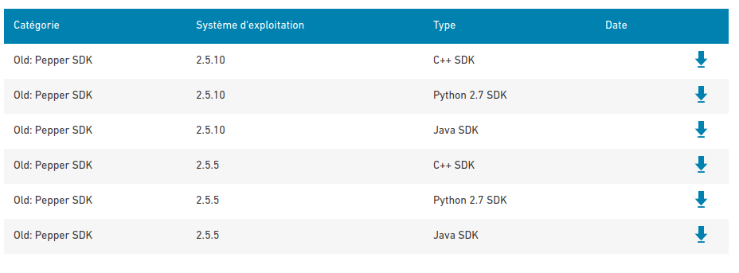

本文整理自硕士研究生期间的学习与实践记录，涉及的软件版本和依赖可能已经更新，请结合当前官方文档使用。
- 下载Aldebaran NAOqi SDK

-
配置安装Aldebaran NAOqi SDK
ROS官方文档http://wiki.ros.org/nao/Tutorials/Installation#NAOqi
-
解压下载的文档
mkdir ~/naoqi cp ~/Downloads/naoqi-sdk-2.5.7.1-linux64.tar ~/Downloads/pynaoqi-python2.7-2.5.7.1-linux64.tar ~/naoqi cd ~/naoqi tar xzf aoqi-sdk-2.5.7.1-linux64.tar tar xzf pynaoqi-python2.7-2.5.7.1-linux64.tar -
配置.bashrc，与官方介绍不同
sudo gedit ~/.bashrc加入下面内容
export PYTHONPATH=${PYTHONPATH}:~/naoqi/pynaoqi-python2.7-2.5.7.1-linux64/lib/python2.7/site-packages -
测试，终端打开python
from naoqi import ALProxy
-
-
下载pepper的ros包，照着ros官网的流程
-
启动机器人，平时连接启动机器人,该状态下机器人可自由活动
roslaunch pepper_bringup pepper_full.launch nao_ip:=192.168.31.236 roscore_ip:=192.168.31.111
启动机器人和moveit，可与上面的代码一起启动**pepper_dcm_robot**
roslaunch pepper_dcm_bringup pepper_bringup.launch
roslaunch pepper_moveit_config moveit_planner.launch
启动传感器信息，其中获取的摄像头信息实时性更高
roslaunch pepper_sensors_py camera.launch
报错解决
- 报错：[ERROR] [1604989480.428739559]: Could not load controller '/pepper_dcm/joint_state_controller' because controller type 'joint_state_controller/JointStateController' does not exist.
sudo apt-get update
sudo apt-get install ros-kinetic-joint-state-controller
rospack profile
- 报错：Could not load controller '/pepper_dcm/Pelvis_controller' because controller type 'position_controllers/JointTrajectoryController' does not exist.
sudo apt-get install ros-kinetic-position-controllers
sudo apt-get install ros-kinetic-joint-trajectory-controller
- pepper的驱动包在ARM架构的cpu下不能编译通过，无法解决
ROS官网资料